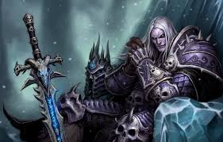
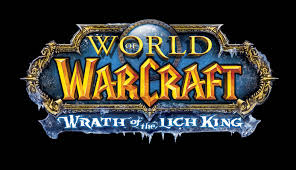

✨ Ruben Dario Chura Tola
Paladin Retribution ⚔️ | Capricornio ♑
Nombre: Ruben Dario Chura Tola
Signo: Capricornio ♑
Colores fav:
Azul · Negro · Verde oscuro
Misión & Visión
🚀 Misión
Convertir cada reto en una oportunidad para crecer, aplicando la disciplina de Capricornio y la fuerza de un paladín para construir soluciones tecnológicas que conecten a las personas.
🌟 Visión
inspirando a otros con mi trayectoria en WoW 3.3.5a, demostrando que con fe y esfuerzo se conquista al Rey Exánime.
🎵 Mi música favorita
VER VIDEO EN YOUTUBE
🎶 Haz clic para escuchar mi canción favorita
Letra (fragmento):
"Antes de que la historia comience ¿Es tan acaso un pecado Para mí el tomar lo que es mío Hasta el fin de los tiempos? Éramos más que amigos Antes de que la historia acabara Y tomaré lo que es mío Crearé lo que Dios nunca diseñarías..."
🎤 Avenged Sevenfold - A Little Piece of Heaven
"Antes de que la historia comience ¿Es tan acaso un pecado Para mí el tomar lo que es mío Hasta el fin de los tiempos? Éramos más que amigos Antes de que la historia acabara Y tomaré lo que es mío Crearé lo que Dios nunca diseñarías..."
🎤 Avenged Sevenfold - A Little Piece of Heaven
⚔️ logros de mi pj y mi personaje favorito 3.3.5a

❄️ Arthas Menethil
Personaje Favorito · Rey Exánime
Mi personaje: Paladín Retribution

"La luz guía mi martillo"
🏆 Logros destacados WoW 3.3.5a
Héroe de la Caída del Rey Exánime (25H) · Glorioso del Bastión de Icrown
Gloria del Cruzado Argenta (10/25) · Caballo de la Muerte
Asesino de Espías de la Plaga · Título "Asesino de Espías"
Gladiador Despiadado · Rating 2400+ en 3v3 (Temporada 8)
El Paladín del Alba · Legendario Shadowmourne completado
Reducto de Alamuerte 25H · Logro "Un minuto para la medianoche"
Inmortal/Indestructible · Naxxramas 25H sin muertos
🎮 Mis Juegos Favoritos


¡Carrusel automático de mis juegos favoritos!
mis redes
ruben.chura@ejemplo.com